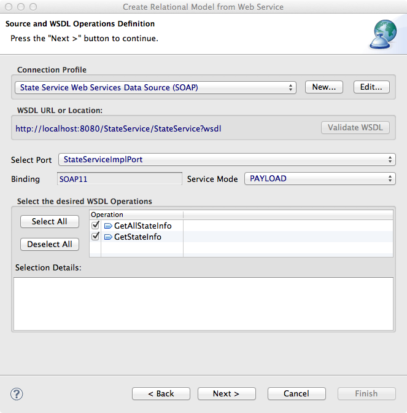

Teiid Designer WSDL To Relational Models Example
This importer results in the creation of queryable relational
procedures that represent your desired request and response web service
structure defined through your WSDL's schema definition.
JBoss Application Server Setup
In order to complete this example, you will need to install and run a local instance of
JBoss AS 5.1.0 with Teiid 7.7.
You can download the JBoss AS 5.1 here
and Teiid 7.7 here. These Teiid
installation instructions
also explain how to install JBoss AS and CXF (required by the example).
Once JBoss AS and Teiid is installed run this command, in the JBoss AS bin directory, to start
the application server:
./run.sh -c teiid-profile-name
Deploy WAR
Start Designer and import the example project called US_States. In the project's deploy directory
there is a file called StateService.war. This WAR file needs to be deployed to your running JBoss AS. Copying
that WAR file into the server/teiid-profile-name/deploy directory does that deployment.
Run Importer
This importer is accessed by launching Eclipse's Import... action. Here is what that importer dialog
looks like:
Select the Teiid Designer > WSDL File or URL >> Source and View Model (SOAP) option and the importer wizard
starts. The first page of the importer looks like this:
Click on the New... connection profile button. This starts a connection profile wizard which looks like this:
Select the Web Services Data Source (SOAP) , edit the name if you wish, and click Next >. This
displays the Web Services Connection Properties page which looks like this:
Click the URL... button to display the WSDL URL dialog. Enter
http://localhost:8080/StateService/StateService?wsdl as the URL. The security type, user name, and
password are not required. This dialog will look like this:
After finishing the connection profile wizard, the Source and WSDL Operations Definition page will
have the connection profile, WSDL URL, port, binding, service mode, and WSDL operations all set. Keep both
operations checked so that queries can be run against both. This is what the completed wizard page will look like:

Clicking Next > will take you to the Models Definition page where the model names and locations are set.
You can change the default model names if you want. Here is what the Models Definition wizard page
looks like:
Clicking Next > takes you to the Procedure Definition wizard page. On this page you define
the requests and responses. The Procedure Definition looks like this:
The GetAllStateInfo operation does not need request element so there is nothing to do for the request.
However the GetStateInfo operation does need a request element. At the top of the page, select the
GetStateInfo operation in the combo. Once you select the operation, the body Schema Contents
changes. In the Schema Contents tree, select stateCode and click the Add button
to add the element to the request. Click on the Response button to define the operation responses. For both
operations add all the Schema Contents elements (Name, Abbreviation, Capital, and YearOfStatehood). Here is
how the wizard page looks after completing the response for GetAllStateInfo:
After completing the request and two responses, click Finish to generate the source and view models. These generated models will
appear in your workspace in the Model Explorer tree. Expanding the generated models should look like this:

The source model provides the invoke procedure exposed by the web service translator. The virtual model's procedures combine the creation of
the requests to the service, the execution of the request, and the extraction of the values from the result. The GetStateInfo
and GetAllStateInfo procedures provide an abstraction that conceals the web service implementation behind relational semantics. Those
procedures can be to preview the result data from within Designer. But in order to do that, you need to create a connection to a
Teiid instance.
Teiid Setup
The Teiid View is used to manage your Teiid instances. If the Teiid View is not open,
select Window -> Show View -> Teiid. Then, either right-click -> New Teiid Instance or just use the view toolbar button.
Here is the New Teiid Instance dialog filled in with all the default values:
Click the Test button to verify Designer can communicate with the Teiid instance. If the connection
can be established you will see this dialog:
After closing the New Teiid Instance dialog your Teiid instance will appear in the Teiid View like this:
Preview Data
After successfully creating a Teiid instance, you can preview the results data. In the Model Explorer, select
the GetAllStateInfo procedure in the view model. Then, select right-click -> Modeling -> Preview Data to
run preview. The SQL Results and Teiid Execution Plan views will be displayed. You should see these results:
Note: In order to preview GetStateInfo, the GetStateInfo_request procedure's transformation must be changed.
To do this, open the view model in a Model Editor and open the transformation editor for the GetStateInfo_request procedure.
The generated transformation procedure code is wrong and should be changed to the following:
CREATE VIRTUAL PROCEDURE
BEGIN
SELECT XMLELEMENT(NAME GetStateInfo, XMLNAMESPACES(DEFAULT ''), XMLELEMENT(NAME stateCode, stateServiceView.GetStateInfo_request.stateCode)) AS xml_out;
END
Once you have changed the transformation code, select GetStateInfo in the Model Explorer. Then select
right-click -> Modeling -> Preview Data to run preview. This preview requires an input so a dialog is displayed asking
for user input. Just enter a two letter US state abbreviation, like "VA" and continue with the preview. This time only the information
for the one state will be displayed.
Testing With A Virtual Database (VDB)
So far you've been testing the models using your own workspace using the Designer's preview feature. If you wanted these
models to be available to your enterprise, you could deploy them to Teiid using a VDB. Create a VDB by running
New -> Teiid VDB. On the Models tab click on the Add model button and add the source and view model.
After the VDB is created, select it in the Model Explorer. Then right-click -> Modeling -> Deploy. The VDB is
now being deployed to your Teiid instance. Looking at the Teiid View you should see your VDB in the VDBs
folder. It should look like this:
The VDB now can be queried using the Database Development perspective or any other SQL query tool. Select the VDB in the
Model Explorer. Then right-click -> Modeling -> Execute VDB. This will open the Database Development
perspective where you can use its SQL Scrapbook view to enter and execute SQL queries.
Here are a couple queries you can execute in the scrapbook:
- exec your-vdb-name.getAllStateInfo();
- exec your-vdb-name.getStateInfo('ny');